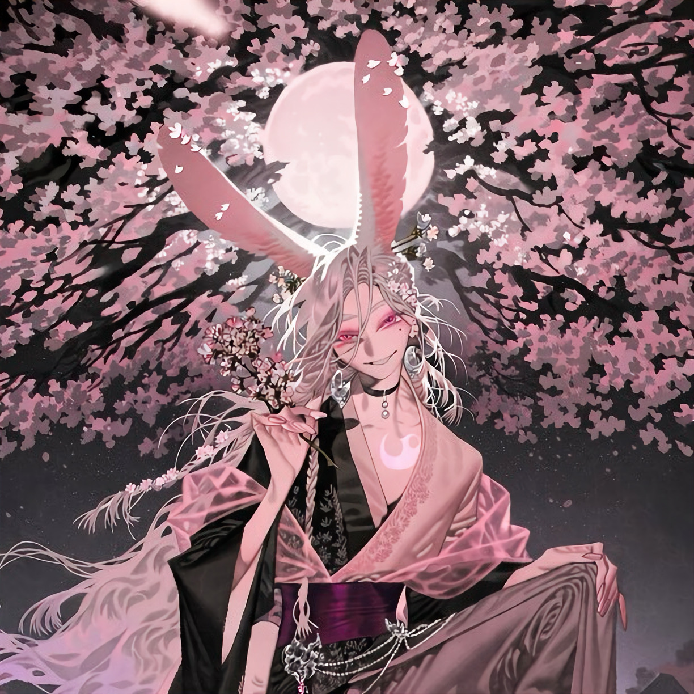

CHARACTER RECORD / 030STATUS: AVAILABLE

✦IMAGE
NOT FOUND
NOT FOUND
望月
✦ WITH OUTFIT
服装込み
PROMPT DATATXT / 030
masterpiece, best quality, ultra detailed, absurdres, boy, solo, adult male, japanese dark fantasy, moon rabbit spirit,
1.5::slender elegant physique, long limbs, narrow waist, pale porcelain skin, delicate androgynous facial features, sharp chin, narrow rose-colored eyes, crescent-shaped pupils, long pale eyelashes, subtle pink eyeshadow, faint beauty mark beneath left eye, small knowing smile, languid gaze, slightly pointed canine teeth::,
1.5::long silky pearl-white hair, waist-length hair, layered flowing hair, soft lavender-pink gradient at hair tips, long parted bangs framing face, wispy strands across forehead, loose side braid decorated with tiny sakura blossoms, long white rabbit ears with dusty pink inner fur, one ear standing upright and the other drooping slightly, fluffy white rabbit tail, faint pink markings resembling flower petals around temples::,
1.5::elegant black and pale pink kimono-inspired ensemble, asymmetrical layered kimono jacket, wide flowing sleeves, black silk outer robe with delicate sakura embroidery, pale blush-pink inner kimono, deep plum obi belt, translucent pink fabric draped from shoulders, long split hakama trousers, embroidered crescent moons along hems, ornamental silver chains at waist, pink crystal tassels, black tabi boots with lacquered soles, delicate floral hairpins, silver moon-shaped earrings, thin black choker with a dangling pearl::,
1.4::mystical rabbit spirit, translucent pale pink crescent markings along collarbone, tiny sakura petals floating around ears, subtle luminous dust trailing from fingertips, faint moonlight glow beneath skin, elongated elegant nails painted muted rose, supernatural beauty, quiet mischievous aura::,